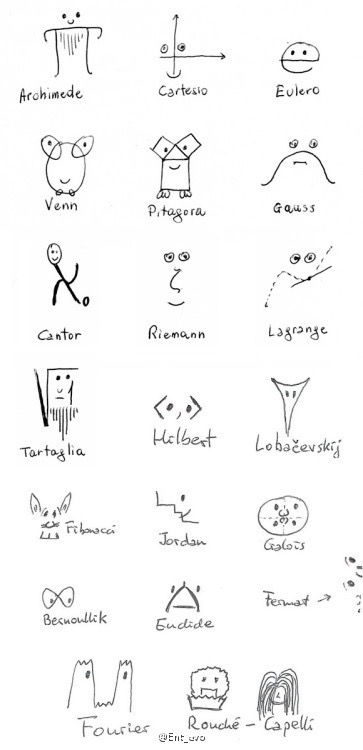
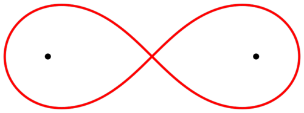

数学家表情包¶
2016-07-12
挨个解释一下（主要是解释图片不是讲述数学家生平）：
Arohimede:阿基米德，古希腊数学家，发明家。将π推到小数点后第六位。
Cartesio:笛卡尔，法国数学家，哲学家。将几何坐标体系公式化而被认为是解析几何之父。
Eulero:欧拉，瑞士数学家，物理学家。1727年欧拉開始用e來表示這常數，并且推导出著名的欧拉公式``e^(i*PI) + 1 = 0``。
Venn:約翰·維恩，英国数学家，逻辑学家。发明了著名的文式图用以表示集合。
Pitagora:毕达哥拉斯，古希腊数学家，哲学家。发现著名的勾股定理（西方叫毕达哥拉斯定理）。
Gauss:高斯，德国数学家。发现了高斯曲线。
Cantor:康托尔，德国数学家。现代集合论创始人，提出了通过一一对应的方法对无限集合的大小进行比较，图中的数为阿列夫数``N0``，表示最小的无限(康托尔证明了无限也存在大小比较)也就是可数无穷。
Riemann:黎曼，德国数学家。黎曼几何学创始人，复变函数论创始人之一。分明了黎曼ζ函數，
ζ(s) = Inf Sigma n=1 (1/n^s)。lagrange:拉格朗日，法国数学家天文学家，发现了著名的中值定理。
Tartagila:尼科洛·塔尔塔利亚,意大利数学家工程师，提出了三次方程解法。
Hilbert:希尔伯特，德国数学家，提出了著名的23个问题，并且是证明论、数理逻辑、区分数学与元数学之差别的奠基人之一,图中为内积空间又名准希尔伯特空间
正式地，一个内积空间是域F上的向量空间V与一个内积(即一个映射)构成的。V上的一个内积定义为正定、非退化的共轭双线性形式（
F = R``时，内积是一个正定、对称、非退化的双线性形式），记为``<.,.> : V X V -> FLobachevsky:尼古拉·罗巴切夫斯基,俄罗斯数学家，罗氏几何的创始人（与黎曼几何一样都属于非欧几里德几何）
Fibonacci：斐波那契数列，意大利数学家提出了著名的斐波那契数列（又叫兔子序列，在理想假設條件下兔子成長率的問題，並自行求解此問題。所求得的各代兔子的個數可形成一個數列）
Jordan:卡米尔·喬丹，法国数学家，在线性代数中，喬丹标准型（Jordan normal form)或称喬丹正规型(Jordan canonical form)是某個線性映射在有限維向量空間上的特別的矩陣表達形式，稱作喬丹矩陣(Jordan matrix)，這矩陣接近对角矩阵：除了主对角线和主对角线上方的对角线外之外，其餘都是零且主對角線上方的對角線的係數若不為零只能為1，且這1左方和下方的係數（都在主對角線上）有相同的值。
Galois: 埃瓦里斯特·伽罗瓦，法国数学家，伽罗瓦群（法语：Groupe de Galois）是抽象代数中域论的概念，表示与某个类型的域扩张相伴的群，是伽罗瓦理论的基础概念。域扩张源于多项式。通过伽罗瓦群研究域扩张以及多项式的理论，称为伽罗瓦理论，是十九世纪法国数学家埃瓦里斯特·伽罗瓦为了解决“高次多项式方程是否有根式解”的问题而创造的。后世也以他的名字命名相关的概念。
Bernoulli:雅各布·伯努利,德国数学家，
在数学中, 伯努利双纽线是由平面直角坐标系中的以下方程定义的平面代数曲线 ：
(x^2 + y^2)^2 = 2a^2(x^2 - y^2)Euclid：欧几里得，古希腊数学家，几何学之父。
Fermat:费马，法国数学家，提出费马猜想，后被证实为费马大定理：
当正整數``n > 2``时，关于x, y, z的不定方程``x^n + y^n = z^n``没有正整数解
Fourier:傅立叶，法国数学家，
傅里叶变换（法语：Transformation de Fourier、英语：Fourier transform）是一种線性的积分变换，常在将信号在时域（或空域）和频域之间变换时使用，在物理学和工程学中有许多应用。因其基本思想首先由法国学者约瑟夫·傅里叶系统地提出，所以以其名字来命名以示纪念。
Rouché–Capelli:Eugène Rouché,法国数学家，Alfredo Capelli，意大利数学家，二人提出Rouché–Capelli理论，为线型代数基础
注：因原文图片过大影响阅读，部分已替换为文字表示。